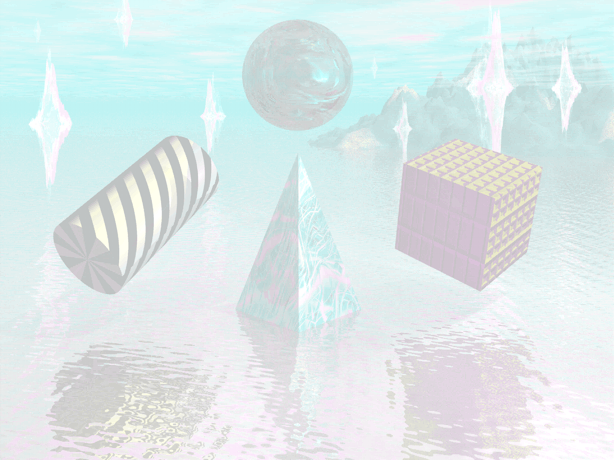

OurWorldHomeCafe.Online
A web-zine archiving the peculiar beauty, shifting ephemerality, and social function of cybercafes.As 2 children of the 1990s who grew up on different continents–South Asia, and North America–our lives were shaped by different degrees and modes of access to the Web. Comparing these experiences made us curious how people in other places experienced this too. We were particularly interested in the slice of time before widespread home adoption of modems, when access was scarce, and data more precious. From the mid 1990s through the present, reverberating waves of internet cafe culture rose and fell at different times around the globe. This project is our effort to trace those high watermarks and their aftermath.
We believe that the cybercafe is one of the largest, but most under-researched pieces of computer hardware, and in it we see an alternate history and future of the web, one in which physical web portals could be both literally nourishing and physically connecting. We ask, what if the web were more like a campfire, or watercooler instead of a personal handwarmer, or a Juicero? In bringing this research together–at present, approximately 325 images, and dozens of articles, videos, and other web artifacts–we aim to reexamine, and perhaps help recover some of the human potential that the internet cafe once offered.
In keeping with the simplicity of the early web, this site is static, and a labor of love/neurosis. Periodically, it may be updated with content as time allows. For simplicity it was hand coded and hosted as a Github Page. If you want to know more about the site’s creators you can do so at the following links:
https://garimathakur.com
https://tabithanikolai.com
Landing page cybercafe photo by Alamy user blickwinkel taken in Morocco on 10/30/2017 and found on Alamy.com
Background sky image derived from a photo by Vecteezy user NARONG KHUEANKAEW found on Vecteezy.com
Moving clouds on main page derived from CSS by Sucharita Khanra on Codepen
Image below produced by LGR and available on the Internet Archive
Internet cafes all over the world have long been spaces of piracy, and if you spend time in ours, you'll arguably see some here too—watermarked stock images. To our surprise a large portion of photos documenting cybercafes on the web exist within the walled gardens of stock photo websites. Though many of these images are used without express permission, we believe they are of substantial historical value in chronicling the ways the web has been experienced globally. As artists and researchers we believe in the importance of citation in the genealogy of ideas, and that art and ideas need to be as free and widely accessible as possible. In every case where information was available we cite both the specific photographer and/or organization responsible, as well as link back to the page on which we discovered the image. Please know that this project is not a profit making endeavor and is intended purely for educational purposes. If you would like your image(s) removed from our cybercafe, please contact us here: tabitha(at)tabithanikolai(dot)com or garimathakur82(at)gmail(dot)com
